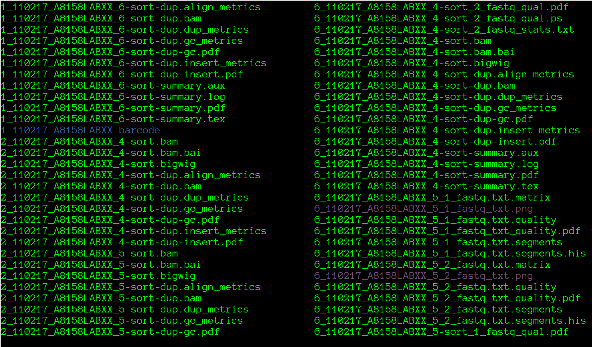
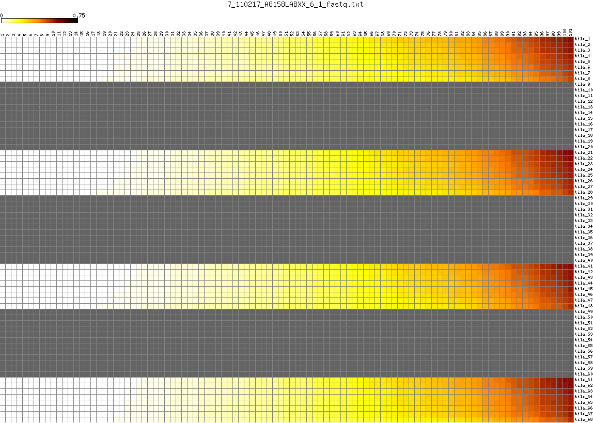
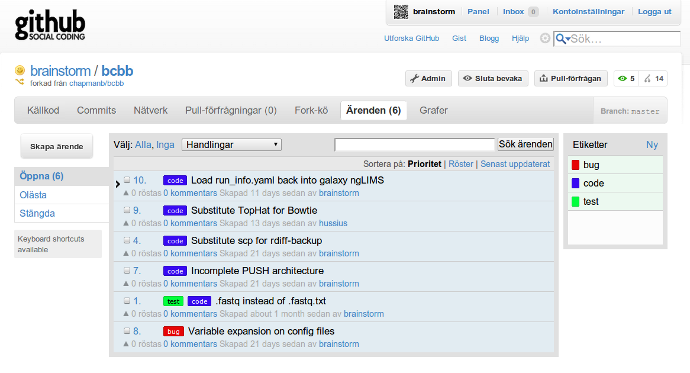

Original Idea

Brad Chapman
Massachussets General Hospital
Very active bioinformatics developer
twitter:@chapmanb github:chapmanb
Contributors
Roman Valls Guimera
Science for Life Laboratory Stockholm
Not to confuse with Sci-Fi
http://scilifelab.se
twitter:@braincode github:brainstorm

Vision
- Illumina sequencer ends run
- Convert to standard FastQ format
- Align against reference genome
- SNP calling, variant eval & effect
- Summary PDF report
"Automate, fix, improve, automate"
Objectives
- Provide an automatic preliminar analysis
- Transform data, ready to use on UPPMAX: SAM, BAM, BAM-sorted, bigwig...
- Perform adhoc analysis with Galaxy
- Perform further adhoc analysis outside Galaxy
Automation
"(...) It [processing] does take a bit, but that's why it's
nice to have it automated, it'll all go
off in the middle of night
without having to think about it."
-- Brad Chapman
Good coders code, great reuse
NGS analysis
- Picard
- GATK
- bowtie
- bwa
- tophat
- samtools
NGS analysis (cont)
- snpEff
- fastx toolkit
- FastQC
- matrix2png
Python modules
- Biopython
- pysam
- mako
- PyYAML
- amqplib
- logbook
- nosetests
Processing infrastructure
- RabbitMQ
- LaTeX
Optional software for generating report graphs
- R with ggplot2, plyr, sqldf libraries.
- rpy2
Collaborative software development

Flexibility vs Complexity

"Those are my principles, if you don't like them, I've others"
-- Groucho Marx
"Talk is cheap, show me the code"
-- Linus Torvalds (Linux Kernel hacker)
$ cd bcbb/nextgen/scripts && find
./picard_gatk_recalibrate.py
./picard_maq_recalibrate.py
./analyze_quality_recal.py
./automated_initial_analysis.py
./bam_to_wiggle.py
./analyze_finished_sqn.py
./utils/resort_bam_karyotype.py
./utils/broad_redo_analysis.py
./utils/convert_samplesheet_config.py
./utils/sort_gatk_intervals.py
./solexa_qseq_to_fastq.py
./upload_to_galaxy.py
./store_finished_sqn.py
./picard_sam_to_bam.py
./variant_effects.py
./align_summary_report.py
./gatk_variant_eval.py
./monthly_billing_report.py
./barcode_sort_trim.py
./illumina_finished_msg.py
./gatk_genotyper.py
$ find . -iname "*.py" | xargs wc -l
(...)
4264 totalt
Initial quantitative analysis on requirements
Metrics
- CPU Time: Bcl2Qseq: 5h Qseq2Fastq: ~2h
- Space: ~600GB raw data, ~1.5TB after pre-processing
- Bandwidth: 25 MBytes/s (!!!)
Overall architecture

Who is who ?
Sequencing machines: Scilifelab
Sequencers "sink" + preprocessing (FastQ)
Galaxy and analysis machine: Uppsala univ. (UPPMAX) cluster
Demultiplexing, initial analysis (PDF) and beyond (Galaxy)
Storage machine: UPPMAX too
Saving datasets for long term archival: SWESTORE
Future: Initial steps on iRODs system

How do we barcode ?
$ ls 110217_SN167_0251_A8158LABXX/1_110217_A8158LABXX_barcode
1_110217_A8158LABXX_5_1_fastq.txt
1_110217_A8158LABXX_5_2_fastq.txt
1_110217_A8158LABXX_6_1_fastq.txt
1_110217_A8158LABXX_6_2_fastq.txt
1_110217_A8158LABXX_unmatched_1_fastq.txt
1_110217_A8158LABXX_unmatched_2_fastq.txt
1_110217_A8158LABXX_bc.metrics
SampleSheet-barcodes.cfg
$ cat 1_110217_A8158LABXX_barcode/SampleSheet-barcodes.cfg
6 TGACCAA
5 GCCAATA
$ cat 1_110217_A8158LABXX_barcode/1_110217_A8158LABXX_bc.metrics
5 25873823
6 29331527
unmatched 3051668
Tile quality metrics

Tile quality metrics

Show PDF examples !
Mental note: results folder !
How can you help ?
- Reporting bugs
- Giving feedback
- http://github.com/scilifelab

Got ack'd on upcoming paper !
\section*{Acknowledgements}
Tammy Gillis, Shangtao Liu and Kaleena Shirley provided
valuable insight on the web interface and laboratory management
functionality. Roman Valls Guimera and Konrad Paszkiewicz eased
installation and configuration by patiently providing feedback
as early adopters of the software.
https://github.com/chapmanb/mgh_projects/blob/master/nglims_paper/nglims_galaxy.tex
Future
- Add support for other platforms, generalize
- Parallellizing strategy on cluster
- Bring Galaxy up with the generated datasets
- Test, fix, improve, automate